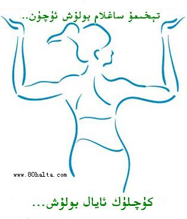

ئالدىنقى يازما
ئالدىنقى يازما كېيىنكى يازما
كېيىنكى يازما
تۇغۇتلۇق ئايالنىڭ سالامەتلىگىنى ئەسلىگە كەلتۈرۈشتىكى ئەنئەنىۋى ئۇسۇللا
ئاپتور:Birzat ۋاقتى:2010-06-24



ئۇيغۇرلار ئۇزاق تارىخىي تەرەققىيات جەريانىدا ئۆزىگە خاس مەدەنىيەت ئەنئەنىسىنى شەكىللەندۈرگەندىن باشقا ، تۈرلۈك كېسەللىكلەرنى يەرلىك ئۇسۇلدا داۋالاش ئەندىزىسىنىمۇ بارلىققا كەلتۈرگەن . تۆۋەندە مەن تۇغۇتلۇق ئايالنىڭ سالامەتلىگىنى ئەسلىگە كەلتۈرۈشتىكى بىر قىسىم ئەنئەنىۋى ئۇسۇللارنى تۇنۇشتۇرۇپ ئۆتىمەن .
تېرىگە ئېلىش ئۇسۇلى
ئاياللار تۇغۇت جەريانىدا ۋە تۇغۇتتىن كېيىن بالىياتقۇدا خۇن توختاپ قېلىش ، ئۇمۇرتقىلىرىئاجراش ، زەخمىلىنىش قاتارلىقلار تۈپەيلىدىن تۈرلۈك كېسەللىكلەرگە گىرىپتار بولىدۇ . بۇ خىل كېسەللىكلەرگە نىسبەتەن دورا ئىچىشتىن باشقا تېرىگە ئېلىپ داۋالىغاندا ئۇنىڭ ئۈنۈمى تېخىمۇ ياخشى بولىدۇ .
تېرىنىڭ قان ئايلىنىشىنى ياخشىلاش ، نېرۋىنى روھلاندۇرۇش ، بەدەننى جاللاندۇرۇش ، ئاغرىقنى توختۇتۇش ، زەخمىلەنگەن ، سۇنغان ، ئاجراپ كەتكەن ئورۇننى ئەسلىگە كەلتۈرۈشتە ۋە شۇ ئورۇندا توختاپ قالغان قان ، زەردابنى تارتىش خۇسۇسىيتى بار .
تېرىگە ئېلىشتا ھامىلدار ئايال بوشىنىپ 20 كۈن بولغاندا تېرىگە ئېلىندۇ . بۇنىڭدا تۇغۇلغىنىغا ئۈچ ئايدىن ئاشقان ساغلام قوي ياكى ئۆچكە ئۆلتۈرلۈپ ، تېرىسى تىز سۈرئەتتە ئاجرىتىلىدۇ . ئاقمۇچ ، قارمۇچ ، ئاپىبەدىيان ، ئەمەن ئۇرۇقى ، زەنچىۋىل، قۇۋزاق داچىن ، سېرىق چېچەك ئۇرىقى ، مۇزا ، قەلەمپۇر ، پىلپىل قاتارلىق ئىسىقلىققا مايىل دورا - دەرمەكلەرنى يۇمشاق سوقۇپ ، تېرە يۈزىگە تەكشى سېپىلىدۇ . ئاندىن تۇغۇتلۇق ئايال يالىڭاچلىنىپ ئىسسىق تېرىگە ئېلىنىپ ئىككى سائەت ئەتراپىدا تۇرغۇزۇلدۇ . ئۇيغۇرلار خېلى بۇرۇنلا تېرىنىڭ بۇ خىل ئالاھىدىلىكىنى بايقاپ تۇغۇتلۇق ئاياللار ھەم تاشقى سەۋەبلىك مۇسكۇل ، سۈڭەكلىرى زەخمىلەنگەن ، كۆك چۈشكەن ، ئىششىغان بىمارلارنى تېرىگە ئېلىپ داۋالاش مەقسىتىگە يەتكەن .
تۇغۇتلۇق ئايالنىڭ تېرىگە ئېلىنىپ سالامەتلىگىنى ئەسلىگە كەلتۈرۈش ئىلمىيلىكىگە ئىگە بولۇپ ، ساپ ، تەبئىي داۋالاش ئۇسۇلىدۇر.
كاللا - پاقالچەك پىشۇرۇپ يىگۈزۈش ئۇسۇلى
كاللا - پاقالچەكنىڭ تەبئىتى سوغوققا مايىل بولۇپ ، ئۇنى پاكىزلاپ پىشۇرغاندا ئۇنىڭدىن بىرخىل يېپىشقاق شىلىمسىمان سۇيۇقلۇق ئاجىرلىپ چىقىلىدۇ . بۇ سۇيۇقلۇقنىڭ ئاجىرغان ئۇستىخاننى ھىملەشتۈرۈش رولى بار . ھامىلدار ئاياللار تۇغۇپ بىر ھەپتە بولغاندا كاللا - پاقالچەك يېگەندە تۇغۇتلۇق ئايالنىڭ ئەسلىگە كېلىشىگە پايدىلىق . چۈنكى تۇغۇت جەريانىدا بەزى ئۇستىخانلىرى ئاجىرايدۇ ، زەخىملىنىدۇ . تۇغۇتلۇق ئايالغا كاللا - پاقالچەك پىشۇرۇپ بەرگەندە تۇغۇت سەۋەبىدىن ئاجىرغان ئورۇنلارنىڭ تىز ئەسلىگە كېلىشىگە ئالاھىدە ئۈنۈمى بولىدۇ . ئۇيغۇرلار كاللا - پاقالچەكنىڭ بۇ خىل ئالاھىدە ئۇسۇلىنى خېلى بۇرۇنلا بايقىغان بولۇپ ، ھېلىھەم ئۇيغۇرلار ئارىسىدا كەڭ تارقالماقتا .
كاللا - پاقالچەك سۆڭەكلىرىنى قاينىتىپ تەرلىتىش ئۇسۇلى
ئاياللار تۇغۇتلۇق جەريانىدا سىرتقى مۇھىت بىلەن ئۇچراشقانلىقتىن ئاسانلا يۇقۇملىنىش ئالامەتلىرى كۆرىلىدۇ . مۇشۇنداق ئەھۋالدا كاللا - پاقالچەك سۆڭەكلىرىگە ئاقمۇچ ، پىلپىل ، قەلەمپۇر قاتارلىق بىر قىسىم دورىلارنى سېلىپ قاينىتىپ ، ھورىدا تەرلەنگەندە بالىياتقۇ ئىچىدە توختاپ قالغان قان ، يۇقۇملىنىش ، مىكروبلىنىش سەۋەبىدىن كېلىپ چىققان ئەگەشمە كېسەللىكلەرنى داۋالىغىلى بولىدۇ .
بۇ خىل ئۇسۇل مۇنداق ئېلىپ بېرىلدۇ ؛ قاينىتىلغان سۇنى داسقا قۇيۇپ، داسنىڭ ئۈستىگە ئىككى تاختاينى قويۇپ ، تۇغۇتلۇق ئايال يالىڭاچ ھالدا تاختاي ئۈستىگە ئولتۇرىدۇ . بەدەننىڭ تۆۋەن قىسمى مەھكەم ئوراق قويىلىدۇ . بىرەر سائەت ئولتۇرغاندىن كېيىن ئايالنىڭ پۈتۈن بەدىنى تەرلەپ ئۆزىنى ناھايتى يېنىك ، روھلۇق ، جۇشقۇن ھىس قىلىشقا باشلايدۇ . بۇنداق قىلغاندا تۇغۇت جەريانىدا بەدەندە ئۇيۇپ قالغان خۇن بەدەندىن ئاجىراپ چۈشىدۇ ، مىكروبلار ئۆلىدۇ . بۇ خىل ئۇسۇل بىخەتەر ، ئىلمىي بولۇپ ، تۇغۇتلۇق ئايالنىڭ تېز ئەسلىگە كېلىشىدە ئالاھىدە پايدىسى بار . ئۇيغۇرلار ناھايتى بۇرۇنلا كاللا - پاقالچەك سۆڭىكىنىڭ تۇغۇتلۇق ئايالنىڭ سالامەتلىگىنى ئەسلىگە كەلتۈرۈشتە ئۈنۈملۈك رولى بارلىغىنى بايقاپ ، بۇ ئارقىلىق تۇغۇتلۇق ئاياللاردا كۆرۈلدىغان ئەگەشمە كېسەللىكلەرنى داۋالاپ ساقايتقان . بۇ ئۇسۇل ھازىرمۇ ئۇيغۇرلار ئارىسىدا قوللىنىلماقتا .
ئۇچاق قىزىلىدا تەرلىتىش ئۇسۇلى
ئادەتتە شورنى ئاساس قىلىپ سېلىنغان تونۇرنىڭ كېرەكتىن چىققان خىش پارچىسىنى كىشىلەر يەرلىك تىلدا << ئۇچاق قىزىلى >> دەپ ئاتايدۇ . تەرلىتىش ئۇسۇلى كاللا - پاقالچەك سۆڭىكىدە تەرلىتىش ئۇسۇلىغا ئوخشايدۇ . ئۇچاق قىزىلىنىڭ تەبئىيتى ئىسسىق بولۇپ ، ئىسسىق مىجەزلىك ئاياللارنى بۇ خىل ئۇسۇلدا تەرلەتسە ھامىدار بولۇشنى ئاسانلاشتۇرغىلى بولىدۇ . ئەكسىچە سوغوق مىجەزلىك ئاياللارنىڭ ھامىلدار بولۇشىنى تىزلەتكىلى بولىدۇ .
بۇ خىل تەرلىتىش ئۇسۇلىنىڭ ئالاھىدىلىگى شۇكى ، بالىياتقۇ ئېغىزىنى قورۇش خۇسۇسىيتى بار . ناۋادا كاللا - پاقالچەك سۆڭىكىنىڭ قاينىتىلغان سۈيىگە ئۇچاق قىزىلىنى سېلىۋەتسە ئۇنىڭ تەبىئيتى مۆتىدىلگە ئايلىندۇ . بۇ خىل سۇنىڭ تۇغۇتلۇق ئاياللاردا كۆرۈلدىغان مىجەز سۇسلىشىشى ، روھسىزلىنىش ، كۆپ ئۇخلاش ، ھورۇنلۇق ، ماغدۇرسىزلىنىش قاتارلىق تۇغۇتتىن كېيىنكى روھىي ھالەتنى تەڭشەش خۇسۇسىيتى بار .
گەرچە ھازىر زامانىۋى داۋالاش ئۇسۇللىرى يولغا قويۇلغان بولسىمۇ ، لېكىن يۇقۇردا تۇنۇشتۇرغان ئۇسۇللارمۇ ئۇزاق ئەسىرلەردىن بۇيان تەجىربىدىن ئۆتكەن ۋە ئەمەلىي قوللىنىپ ، ئۈنۈم بەرگەن داۋالاش ئۇسۇلىدۇر .
<< پەن ۋە تۇرمۇش >> ژۈرنىلى دىن ئېلىندى

 يازما مەنبەسى: بېكەت ئەسىرى
يازما مەنبەسى: بېكەت ئەسىرى خەتكۈش: تۇغۇت ئايال
خەتكۈش: تۇغۇت ئايال  مۇناسىۋەتلىك يازمىلار:
مۇناسىۋەتلىك يازمىلار:
ئىنكاس: 4 | نەقىل: 0 | كۆرۈلگىنى: -
 قايتۇرما
قايتۇرما ]
]تىرىگە يۆگىنىشنى مانا ئەمدى ئ اڭلاۋاتىمەن . كاللا - پاقالچاقنىغۇ يىدىم ، << ئۇچاق قىزىلى >> دە ئەمەس ، شو گۈرۈچ ئىچىپ تەرلەندىم . يامان يېرى ئاخىرى بەك سوغوق كەپ كىتىپ يىقىلىپ قالدىم .... 
ئەسسالامۇ ئەلەيكۇم بېرزات ئەپەندىم ، ئاللاھ ئەزىز تېنىڭىزنى سالامەت، ئىشلىرىڭىزنى ئوڭۇشلۇق قىلسۇن. ئۇزۇندىن بېرى سىزنىڭ بىلوگىڭىزنىڭ ئىشتىراكچىسى سۇپىتىدە تېمىلىرىڭىزنى كۆرۇپ ۋە ئۆزەمگە ماس كېلىدىغانلىرىدىن پايدىلىنىپ كېلىۋاتقان ئىدىم. ئەمدى ئۆزەم توغىرلىق بىر مەسلىھەت سورىماقچى بولۇپ قالدىم. قىممەتلىك ۋاقتىڭىزنى چىقىرىپ مەسلىھەت بەرگەن بولسىڭىز . مەن بۇ يىل 24ياشقا كىردىم . 7 -ئايدا توي قىلغان، جانابى ئاللاھنىىڭ رەھمىتى بىلەن بويۇمدا قېلىپ 5 ئايلىق بولدى . سېزىكىممۇ خېلى قاتتىق بولغان ئىدى، ھازىر بىر نەرسە يېسەملا زەدەم قايناپ مەيدەم قاتتىق ئاچچىق بولۇپ بەك بىئارام قىلىۋېتىدىغان بولۇپ قالدى، ئىڭىشىپ ئۇستۇن توۋەن بولسام بىر نەرسە يېنىپ كېتىدىغاندەكلا . بۇرۇن ئۇزۇن مەزگىل ئوقۇش بىلەن سىرىتتا يۇرگەچكىمۇ ئاشقازىنىم سەل ئاجىز ئىدى، بەك سوغوقلۇق ، لازا ئاچچىقسۇ كوپرەك بولغان بىر نەرسىلەرنى يېسەم بىئارام بولۇپ قالاتتىم . ھازىر زەدەم قايناشقا قەۋزىيەتمۇ قوشۇلدى ،قەۋزىيەتمۇ خېلى ئېغىرلىشىپ قالدى،ئشتىھايىم نورمال بولمىسا.چوڭلاردىن سورىسام ھامىلە چوڭيىشىغا ئەگىشىپ بالياتقۇ يوغىناپ ،ئاشقازاننى ئۈستىگە كۆتىرىۋەتكەندىكىن ئاشقازان خىزمىتى ناچارلاپ شۇنداق بولىدۇ ، تۇغۇپ بولغاندىن كېيىن ئوڭشىلىپ كېتىدۇ دەيدۇ. لېكىن مەن گېلىمدىن بىر نەرسە ئۆتكەندىكىلا بىئارام بولۇپ ھەتتا نامازغا تۇرغاندا سەجدە قىلىشتىنمۇ ئەنسىرەيدىغان بولۇپ قالدىم . سىزنىڭ يازمىلىرىڭىزنى كورۇپ ھەسەل مەنپەئەت قىلىپ قالامدىكىن دەپ ھەسھل ئىزدېسەم تازا جىڭ ھەسھل تاپالمىدىم . ئۆزۇم چەتتە بولغاچقا يۇرىتنىڭ جىڭ ھەسەللىرىنى تاپالمايمەن . بۇ يەردە ناۋاتمۇ يوق. باشقا دورا قىلىپ باقايمىكىن دېسەم ھامىلىگە زىيان يېتىشىدىن ئەنسىرەپ قالدىم .شۇڭا مۇشىنىڭغا بىر چارە كۆرسىتىپ بەرگەن بولسىڭىز. ئاللاھ ئەجرىڭىزنى زىيادە قىلسۇن.
مەنمۇ بالامنى ئوپراتسىيە قىلىپ تۇققان .مەنمۇ كېيىنكى ئىشىمدىن يەنى بالا توقسام ئوپرەتسىيەگە چۈشۈپ قېلىشتىن بەكمۇ ئەنسىرەيمەن...مۇشۇ ۋاقىتلاردا دوختۇرخانىغا كىرگەنلىكى كىشنى ئوپراتسىيە دەپلا تۇرىۋالىدىكىن.....
مەن بىرنچى بالامنى ئوپراتسىيە بۇلۇپ تۇققان، ئاردىن4يىل ئۆتتى، يەنە بىر بالامغا ھامىلدار بولغىنى 7ئاي بولدى.شۇڭا مەن يەنە ئوپراتسىيە بۇلۇپ قىلىشتىن قۇرقىۋاتىمەن. قانداق قىلغاندا ئۆز يولى بىلەن تۇققۇلى بولىدۇ؟ مۇشۇ مەزمۇندا ماتتىرياللاردىمۇ ئىنىق ئۇقۇم يوق ئىكەن. مەسلىھەت بەرگەن بولساڭلار؟ ئىنتايىن ياخشى بوللاتتى.
ئىنكاس يوللاش